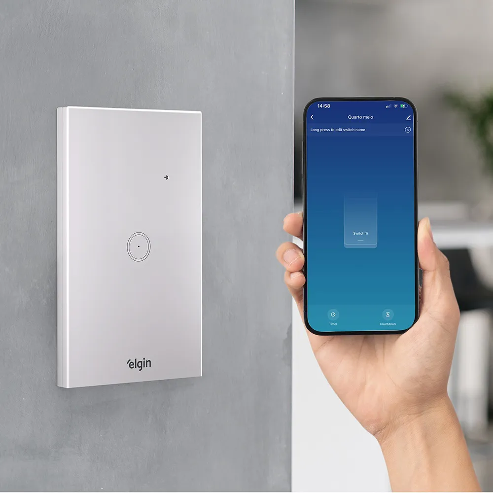
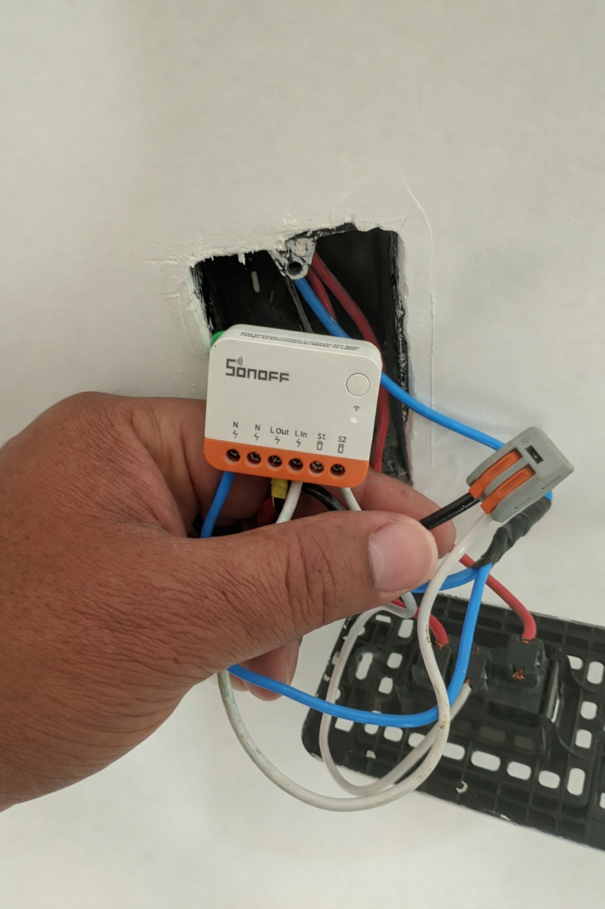
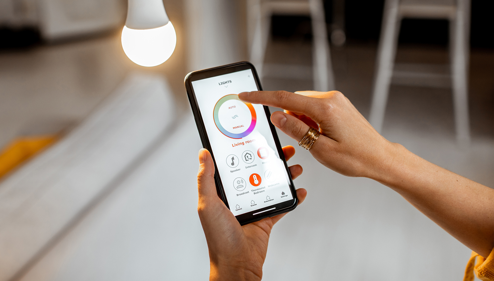

Automação Residencial: O que é? Como Funciona?
Publicado em · Rotiv Elétrica e Refrigeração
A automação residencial deixou de ser exclusividade de residências de alto padrão. Hoje, é possível automatizar iluminação, tomadas, climatização e muito mais em apartamentos e casas comuns, com custos acessíveis e instalação relativamente simples quando feita por um profissional capacitado.
Mas antes de sair comprando equipamentos, é importante entender o que é automação residencial de verdade, como ela funciona na prática e o que precisa ser avaliado antes de instalar. Esse cuidado evita desperdício de dinheiro e garante que o sistema funcione de forma segura e eficiente.

Interruptores inteligentes permitem controlar luzes e tomadas pelo celular de qualquer lugar.O que é automação residencial?
Automação residencial é o conjunto de tecnologias que permite controlar dispositivos elétricos da casa de forma remota, programada ou automática. Isso inclui luzes, tomadas, ar-condicionado, fechaduras, câmeras e outros equipamentos conectados a uma rede Wi-Fi ou a um sistema de controle central.
Na prática, significa poder ligar ou desligar a iluminação pelo celular, programar o ar-condicionado para acionar antes de você chegar em casa, ou criar cenas automáticas como "ao sair de casa, desligar tudo".
Como funciona na prática?
A maioria dos sistemas de automação residencial acessíveis funciona por Wi-Fi, sem a necessidade de cabeamento extra. Os dispositivos são instalados nos pontos elétricos existentes da residência e se conectam à rede doméstica, permitindo o controle pelo smartphone.
Entre os equipamentos mais comuns estão os interruptores inteligentes, as tomadas inteligentes e os módulos de controle para cargas específicas como lâmpadas e ventiladores. Todos podem ser controlados por aplicativos e, em muitos casos, integrados a assistentes de voz como Alexa e Google Assistente.
O que pode ser automatizado em uma casa comum?
A automação pode ser aplicada em diferentes pontos da residência, de acordo com as necessidades e o orçamento disponível:
| Ambiente | O que automatizar | Benefício principal |
|---|---|---|
| Sala e quartos | Iluminação e ventiladores | Controle remoto e economia |
| Sala e quartos | Ar-condicionado | Programação e conforto |
| Cozinha e área de serviço | Tomadas inteligentes | Segurança e controle de carga |
| Área externa e garagem | Iluminação e portão | Comodidade e segurança |
| Toda a residência | Cenas e rotinas automáticas | Praticidade no dia a dia |
Interruptores inteligentes: o ponto de partida mais comum
Para quem está começando, os interruptores inteligentes costumam ser o primeiro passo. Eles substituem os interruptores convencionais e permitem controlar a iluminação pelo celular, por voz ou de forma automatizada.
Equipamentos como os da linha Sonoff, amplamente utilizados no Brasil, oferecem boa relação custo-benefício e funcionam sem a necessidade de um hub central, apenas com conexão Wi-Fi. A instalação é feita diretamente no ponto elétrico existente, substituindo o interruptor comum.

Interruptores inteligentes Sonoff instalados pela equipe Rotiv em Nova Iguaçu.Precisa contratar um eletricista para instalar automação?
Depende do equipamento, mas em geral, sim. A maioria dos dispositivos de automação é instalada dentro das caixas de passagem da rede elétrica, o que exige conhecimento técnico para fazer as conexões com segurança.
Fazer a instalação de forma incorreta pode causar curto-circuito, queima de equipamentos ou, em casos mais graves, risco de incêndio. Por isso, a recomendação é sempre contar com um profissional, especialmente quando o trabalho envolve a rede elétrica da residência.
Situações que exigem atenção técnica
- Interruptores sem fio neutro (alguns sistemas exigem essa adaptação)
- Instalações antigas com fiação inadequada
- Pontos que precisam ser adaptados ou criados
- Integração com o quadro elétrico para automação de cargas maiores
Automação residencial exige troca de toda a fiação?
Não necessariamente. A maior parte dos sistemas de automação Wi-Fi é projetada para aproveitar a instalação elétrica existente. No entanto, se a fiação da residência for muito antiga ou estiver fora das normas, pode ser necessário fazer adequações antes de instalar os dispositivos inteligentes.
Por isso, antes de qualquer instalação, é recomendável que um eletricista avalie o estado geral da rede elétrica da casa. Isso evita problemas futuros e garante que o sistema de automação funcione de forma segura e estável.
Por onde começar?
O ideal é começar de forma gradual, identificando os pontos da casa onde a automação traria mais benefício no dia a dia. Para a maioria das pessoas, isso significa começar pela iluminação dos ambientes mais usados, como sala e quartos.
- Escolha um ambiente para começar, não tente automatizar tudo de uma vez
- Defina quais dispositivos fazem mais sentido para a sua rotina
- Consulte um eletricista para verificar a compatibilidade com a sua instalação
- Opte por equipamentos de marcas com suporte técnico e atualizações regulares
- Planeje a expansão do sistema conforme a necessidade

Controle completo da residência pelo celular, de qualquer lugar.Perguntas frequentes sobre automação residencial
Automação residencial é cara?
Não precisa ser. É possível começar com interruptores e tomadas inteligentes a um custo bastante acessível e expandir o sistema ao longo do tempo conforme a necessidade e o orçamento.
Funciona sem internet?
Depende do equipamento. Alguns dispositivos permitem controle local mesmo sem acesso à internet, mas o controle remoto fora de casa normalmente exige conexão ativa.
É compatível com qualquer residência?
Em geral, sim. No entanto, instalações elétricas muito antigas podem precisar de adequações antes da instalação dos dispositivos inteligentes.
Posso instalar sozinho?
Alguns equipamentos permitem instalação simples por quem tem conhecimento básico de elétrica, mas a recomendação geral é contar com um profissional para garantir segurança e bom funcionamento.
Conclusão
A automação residencial é uma solução prática e cada vez mais acessível, que pode trazer conforto, economia e segurança para o dia a dia. O ponto de partida mais comum são os interruptores inteligentes, que transformam os pontos elétricos existentes em pontos controlados pelo celular.
Para quem está em Nova Iguaçu ou na região do Rio de Janeiro, contar com um eletricista especializado garante que a instalação seja feita de forma segura, compatível com a rede elétrica existente e pronta para crescer junto com as necessidades da sua casa.
Leia também
Veja também outros artigos do nosso blog:
Quer automatizar a sua residência em Nova Iguaçu ou no RJ?
A Rotiv Elétrica e Refrigeração instala interruptores inteligentes, tomadas e sistemas de automação com segurança e acabamento profissional em toda a região.
Solicitar orçamento pelo WhatsApp